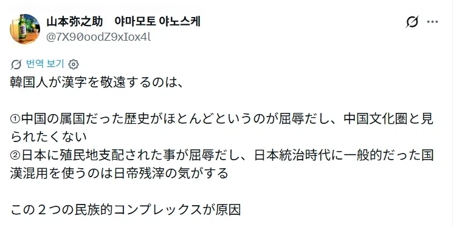

한국인이 한자를 경원시 하는 건,
1. 중국의 속국이었던 역사가 대부분이었다고 하는 게 굴욕이었고, 중국문화권으로 보이고 싶지 않다
2. 일본에 식민지 지배를 받은 게 굴욕이고, 일본통치 시대에 일반적이었던 국한 혼용을 쓰는 건, 일제 잔재인 거 같다.
이러한 두 가지의 민족적인 컴플렉스가 원인
한국인:엥 그냥 한글전용이 편해서 안쓰는데용

한국인이 한자를 경원시 하는 건,
1. 중국의 속국이었던 역사가 대부분이었다고 하는 게 굴욕이었고, 중국문화권으로 보이고 싶지 않다
2. 일본에 식민지 지배를 받은 게 굴욕이고, 일본통치 시대에 일반적이었던 국한 혼용을 쓰는 건, 일제 잔재인 거 같다.
이러한 두 가지의 민족적인 컴플렉스가 원인
한국인:엥 그냥 한글전용이 편해서 안쓰는데용
동음이의어 존나게 많아서 한자표기 안하면 제대로 알아보지도 못하는 새끼들이 뭐라는거냐
이래서 실록이 중요함.
실록에도 언문만 써서 한자 안쓰는 세태를 비판하는 사대부가 나오는데 말이지 ㅋㅋㅋ
너무 어려워서..
X 찾아가서보니 걍 어그로 잽스임
굳이 갈무리 해 올 필요가 있었나 싶네
너도써봐 개좋아
좆도 모르면서 아는척 하는구나 ㅋㅋㅋㅋㅋ
님둘두 하나만 쓰샘 ㅋㅋ 개편함 ㅋㅋ
ㅋㅋ너거들 자체 개발 언어 읎나 ~
니네처럼 초등학교 정규교육부터 한자 공부 안해도 돼서 그래 ㅂㅅ들아 ㅋㅋㅋㅋ
팩트를 기반한 소설임
ㄹㅇ 편해서 쓰는건데 병신이 ㅋㅋㅋ
여전히 즈그들식 역사해석이 진짜인줄아는 쪽국
이런게 참 안타까운 점이지.
즈그들 문자가 없어봐서 생각하는 것도 없어보이네ㅋㅋㅋㅋㅋㅋㅋ
동음이의어가 일본만큼 심하지 않거든. 그리고 솔직히 한자 어려워
4000년 된 구닥다리문자를 왜 아직도 쓰냐고 ㅋㅋㅋ
한글이 훨씬 우월함
한자 쓰던 베트남도 탈출했는데 먼 병신 같 개소리냐
하다 못해 로마자라도 쓰면 몰라 먼 한자 가지고 일본 지배 타령하고 자빠졌냐
일제 강점기때는 일본도 문맹자가 넘쳐서 편지 못읽어서 대신 읽어주는 경우도 많았는데 한자부심을 왜 가지는지 모르겠네
중국이나 일본도 한자 버릴려다 실패한거드만
음흉하다진짜
아직도 한자변형쓰는 지들이 속국아닐런지?
일본도 한자안쓰려다가 안되서 포기해놓고 뭔 ㅋㅋ
망상 섞인 분석질하는 일본인의 종특
한자 버리지도 못하는데 제대로 읽지도 못하는 병신들이 떠드는 개소리
그냥 한자보다 한글이 편하고 좋은데
굳이 힘들걸 쓸 필요가 있나
한글이 있는데 한자를 왜 씀? ㅋ
한자가 아니면 도무지 책을 읽을 수 없다고 아직 눈물 훔치는 한자사랑꾼들도 많음
명대사: "네가 사용한 문장에 한자어가 몇개 인줄 아니?"
ㄹㅇ 한자만큼 지랄맞은 문자가 없음 요즘 중국인들도 한자 잘 모른다며 ㅋㅋㅋ
아 니네는 그래?? 그래서 문자 바꾸려다 실패한거임?ㅋㅋ
편한거 냅두고 불편한걸 왜써 병신똘박년아 ㅋㅋ
한국인에게 있어서 한자란, 영어권의 라틴어와 같다.
라틴어를 몰라도 사는데 지장이 없고.
한자를 몰라도 사는데 지장이 없다.
오히려 둘 다 안 쓰는 게 삶이 더 편하다.
단지, 어원과 관련된 문해력의 차이 정도가 전부라 공부가 '권장'되는 수준.
넷우익들 한자 집착은 그냥 멘헤라급이지 뭐
문자로 안쓸뿐
언어로는 계속 쓰지
니들처럼 문자가 없진 않거든 ㅋㅋㅋㅋ
그렇게 생각할수는 있겠는데
너무 보고 싶은쪽으로먼 보네
중요한건 한자의 근본인 정자체는 우리나라 대만 정도가 씀
중국이나 일본은 근본도 없는 간체 신자체 씀
+홍콩
말레이시아도 있우
진짜 편협한 시각ㅋㅋ
일본인이 왜 중국 문자를 자랑스러워하는 거야ㅋㅋ
시바 ㅋㅋㅋ 일본 6년 살면서 노가다 2년 정도 했는데, 자재 모아둔 봉다리에 뭐 넣었는지 써두라니까 한자 못쓴다고 애들 버벅 거려서 내가 대신 써줬다. 핸드폰 없으면 한자도 못 쓰는 새끼들이
흠.. 한자덕분에 문맹률은 줄으셨겠죠잉?
"영어를 쓰는 영미사람들은 로마에 지배당했던것이 부끄러워서 일상적으로 라틴어를 안쓰는것"
일본의 대표적인 모순중 하나 아닌가
지들도 한자 탈출 하려다 실패함
일본은 민폐를 끼치기 싫어하는 민도 좋은나라(전범국)
애초에 한자 안쓰려고 한글만든건데 뭔개좆같은소리여
키보드로 글자 입력도 못하는 주제에ㅋㅋㅋㅋㅋ
일본어는 한자 안쓰면 뜻 안통함?
세종대왕님이 이럴까봐 나라말이 중국이랑 달라서 백성들이 힘들어한다고 딱 박아놓음 ㅋㅋㅋ
개발자가 개발의도를 딱 박아버리니까 개소리 바로 컷됨 ㅋㅋㅋㅋㅋㅋㅋ
한글 쓰면 되는데 왜 굳이 니네도 필요하면 가져가서 써, 대신 출처 확실히 명시하고
한자문화권에서 한자 폐지한 국가는 벳남 한국 2개임
몽골은 몽골글자와 한자 병행하다 폐지당한거라 애매